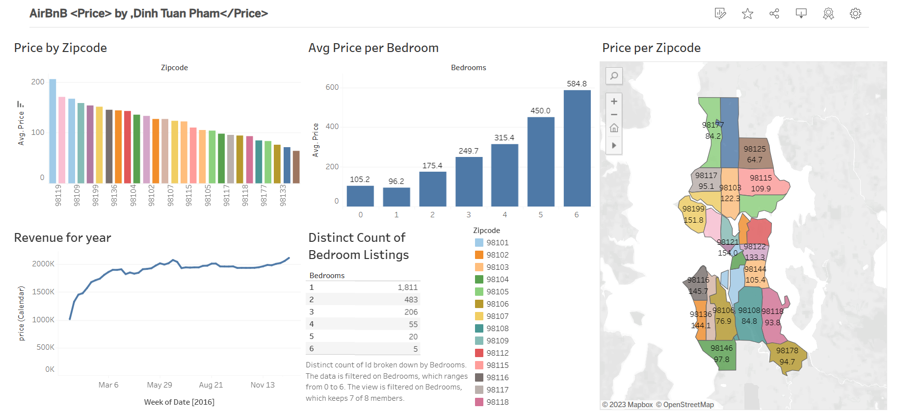
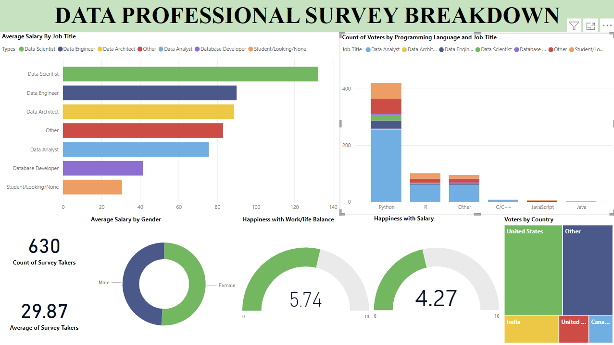

In this project, I employ Excel for a comprehensive analysis of house prices sourced from Airbnb. The dataset is thoroughly cleaned and prepared for further examination. Subsequently, I leverage Tableau to visualize the refined dataset. Specifically, the reporting entails capturing overall sales figures and furnishing detailed insights based on variables such as Bedrooms, Zip codes, House prices, Period of time, and Revenue in the realm of Airbnb. The analysis is centered around delivering valuable information regarding the Distribution and Highlights, as specified by the project requirements.

The Nashville Housing Data Cleaning project focused on enhancing the quality and usability of a dataset using SQL. The key objectives were to standardize the date format, populate missing property address data, break down the address into individual columns (Address, City, State), remove any duplicate entries, and delete unnecessary columns. By implementing these data cleaning steps, the project aimed to ensure consistency, accuracy, and improved analysis capabilities for the Nashville housing dataset.

The Covid-19 Data Exploration project utilized SQL to analyze two Excel datasets: Covid deaths and Covid vaccinations. By employing various SQL techniques, such as Joins, CTEs, Temp Tables, Window Functions, Aggregate Functions, Creating Views, and Converting Data Types, the project aimed to search for insights and uncover correlations between Covid deaths and vaccination rates.

The Data Profession Survey Breakdown project utilized Power BI to analyze survey data related to the data science field. The project aimed to uncover insights about the happiness, motivation, and backgrounds of individuals working in or aspiring for a career in data science. By visualizing the survey results using Power BI, the project provided a comprehensive breakdown of the data profession, shedding light on various aspects of the field and offering valuable insights into the factors that drive satisfaction and motivation among data professionals.
The Movie Industry Analysis project involved leveraging Jupyter Notebook to conduct a comprehensive analysis of data obtained from IMDb. The primary objective of the project was to gain deep insights into the movie industry by addressing pertinent questions such as the current state of the industry or the influence of Netflix as a dominant player. The analysis primarily focused on movie revenue trends over the past few decades while also considering factors like actors, genres, and user ratings. The project used Python and analytical techniques to uncover valuable insights for the movie industry's development. It provided a holistic view, revealing factors that contribute to its success. The findings offer actionable guidance and knowledge for industry stakeholders.